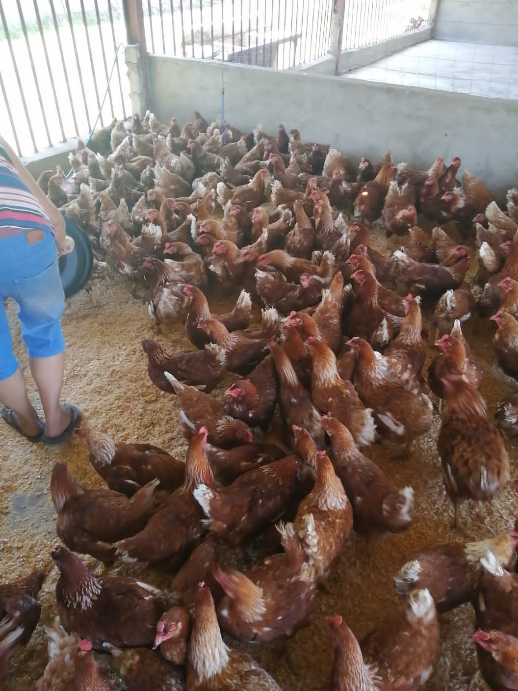

Finding a balance, striking a compromise.
How to do poultry production
Breeds to consider
For poultry production one can consider venturing into broiler and or layer production. Broilers are mainly kept for meat production as they grow at a fast rate and have high feed conversion rates (FCR). They mature (attain a mass of 2kg) between 6 to 8 weeks high FCR implies that for a gram of feed they eat, most of it is converted to body tissue. The main broiler breeds in Zimbabwe are the Hamara Sasso, Cobb 500, and Ross. Layers are chickens which are kept for egg production. When they start laying eggs they lay an egg every day. In Zimbabwe the common layer breeds are Hamara Sussex, White Leghorn, Brown Leghorn and Black Minorca.
Calendar and Feed
These birds can be bought and reared at any time of the year. Broiler feed is available from the local shops, the city of Gwanda or from the City of Bulawayo. There are two broiler feeding phases:
Three phase feeding
- Starter: 0.45 kg per bird (0 – 14 days of age)
- Broiler Grower: 1.10 kg per bird ( 15 – 25 days of age)
- Broiler Finisher: 1.7 kg per bird ( 26 – 35 days of age)
Two phase feeding
- Broiler Starter: 0.75 kg per bird (0 – 21 days of age)
- Broiler Finisher: 0.85 kg per bird (22 – 351 days of age)
Designing structures
As a general guide, each bird requires an area of 0.1 square meters per bird. The length of the broiler house should run from east to west and the eastern and western sides should be built to the roof so that broilers are not exposed to direct sunlight. The fowl run should be at least 2.6 meters in height and the floors should be made of concrete. The northern and southern sides should have walls which are at least 0.5 meters high, with the remaining part covered by 9mm diamond mesh wire from where the wall ends up to the roof, for proper ventilation and yet keeping predators out. The walls should be plastered so that it is easy to clean them. For labor, a poultry run which accommodates 1000 or less broilers will require a single person to look over it. The distance between the poultry and residential houses should be at least 50m to 100m.
Diseases and Medicine
This serves as a general guide, however for any complications one should visit the nearest veterinary specialist. In this blog, I will mention the most common four diseases. Please take note, if a bird dies on its own, its carcass should not be eaten, but it should be burnt.
- Newcastle Disease Symptoms Breathing problems, discharge from their nose, eyes will begin to look murky. The legs and wings become paralyzed and their neck twisted.
- Fowl Pox Symptoms: White spots on their skin, scabby sores on their combs, white ulcers in the mouth or trachea.
- Botulism Symptoms: Progressing tremors. The tremors will progress into total body paralysis which includes their breathing. Feathers will be easy to pull out and death usually occurs within a few hours.
- Infectious Coryza Symptoms: Heads become swollen. Their eyes will swell shut and the combs will swell.
Prevention and Treatment: To prevent it vaccinate chickens with New Castle vaccine, periodically spray your fowl run with virukill and put some in drinking water at 5mls per 5 liters
Prevention and Treatment: Vaccinate with Epox or Fowl Pox that can prevent the healthy birds from contracting the disease.
Prevention and Treatment: Use is an antitoxin that can be acquired from a vet. You can mix 1 teaspoon of Epsom salts with 30 mls of warm water and administer to the birds by dropper once daily.
Prevention and Treatment: Use a vaccine called Avivac Coryza.
Waste disposal management
Manure from broilers is a source of flies, bad smell and a good attractant of rodents. The best way to dispose of the wastes from our fowl run is to put it in our gardens or give to or sell to people with vegetable gardens. When applying manure to the fields we must not over apply it as it will lead to the drying up of our crops. If you do not encounter too many disease outbreaks, it can be used as feed for donkeys and “road runner” chickens. However this should not be encouraged as it encourages the spread of disease to local chickens.
Market
Broilers can be sold directly to Manama Hospital and Manama High School, or the local business center, These broilers can be transported and sold in the cities of Bulawayo and Gwanda. I would suggest that farmers meet up and form cooperatives so that they can sell their birds one group, as this reduces transportation costs and this way they stand a chance of meeting supply demands of people who want a large number of broilers.